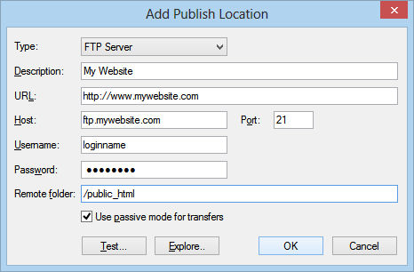
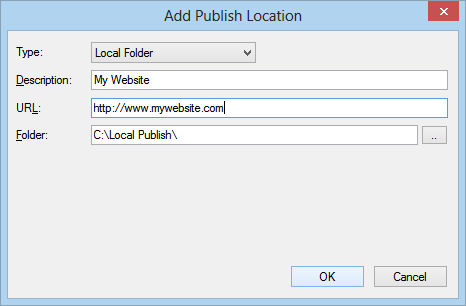
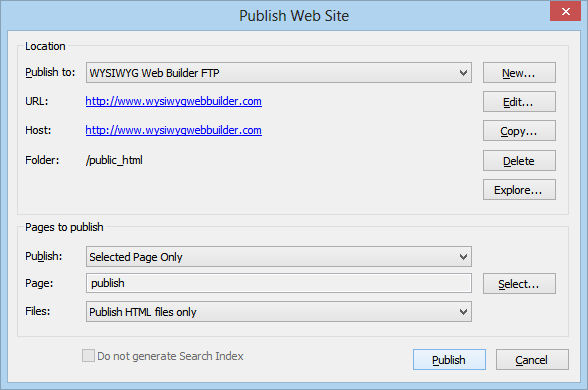
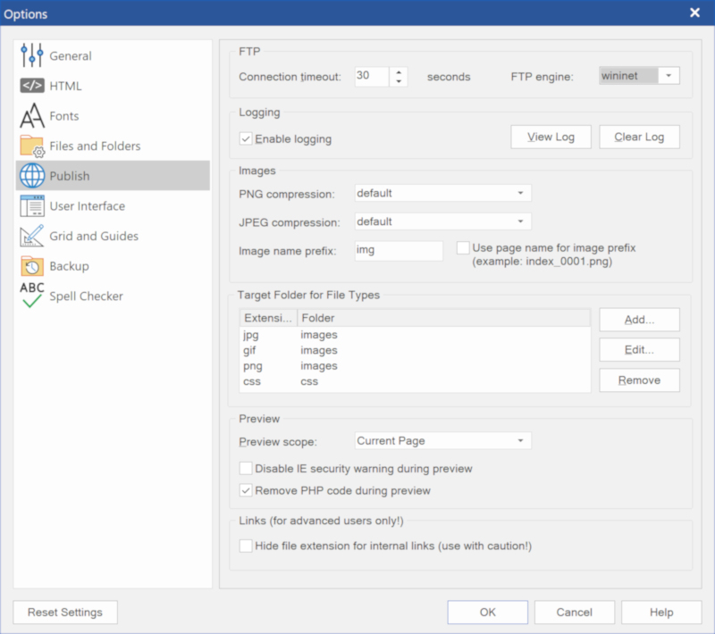

Publish your website to a local folder
If your webhost doesn't support FTP or if you want to use your favorite FTP client to transfer the files to the server, you can use the option 'Publish to a local folder'. Click New to add a new location to the list. Enter a name for the location a select Local Folder as type. Enter the folder where you want to publish the website files to. Click OK to save the data and then click Publish to save the files to the specified folder. Now you can take these files from the local folder and publish them using your preferred FTP utility.
If your webhost doesn't support FTP or if you want to use your favorite FTP client to transfer the files to the server, you can use the option 'Publish to a local folder'. Click New to add a new location to the list. Enter a name for the location a select Local Folder as type. Enter the folder where you want to publish the website files to. Click OK to save the data and then click Publish to save the files to the specified folder. Now you can take these files from the local folder and publish them using your preferred FTP utility.
Publishing your web pages
The final phase of creating a web site is publishing your pages. To place your pages on the Web, you need a Web server. Commonly called hosts, Web servers alllow you to transfer and store files, including HTML documents, images and multimedia files.
Unless you have your own Web Server, you need to find a server to host your pages. Some example of webhost are:
http://www.godaddy.com/
http://www.1and1.com
but of course there are many many more! Make sure you choose a webhost which supports FTP, which makes it much easier to publish your pages from Web Builder. If you want to make sure of the advanced features of Web Builder (like the CMS) then we also recommend to use Linux hosting with PHP/MySQL.
The final phase of creating a web site is publishing your pages. To place your pages on the Web, you need a Web server. Commonly called hosts, Web servers alllow you to transfer and store files, including HTML documents, images and multimedia files.
Unless you have your own Web Server, you need to find a server to host your pages. Some example of webhost are:
http://www.godaddy.com/
http://www.1and1.com
but of course there are many many more! Make sure you choose a webhost which supports FTP, which makes it much easier to publish your pages from Web Builder. If you want to make sure of the advanced features of Web Builder (like the CMS) then we also recommend to use Linux hosting with PHP/MySQL.
Pages to Publish
In this section of the publish window you can select which pages to publish:
Entire Web Site
Publishes all pages of the web site (except the pages which have enabled 'Don't Publish this Page' in Page Properties)
Select Page Only
Publishes the select page, click 'Select' to specify the page to be published.
Note that you can also select a folder!
Select Page and Sub Pages
Publishes the select page and all of its sub pages (if any).
The 'Files' selection specifies which files will be published:
Publish all files
All files of the selected page(s) will be published
Publish HTML files only
Select this option if you do not want to upload images or other components along with the HTML file,
Publish changed files only
Select this option if you want to published the files that were changed since the last time you've published your web site. What exactly
will be published depends on the changes you've made. For example, if you've only changed the position of an object, then only the
HTML file was changed, but if you've changed the size of a shape, then the shape image needs to be regenerated and therefore the
HTML and the image file will be published.


What to do in case of publishing errors? Here's a checklist:
• Make sure your ftp address (host), username and password are valid.
• Use 'Test connection' to verify the specified data.
• Make sure you the remote folder is correct! Consult the documentation of your host for this value!
• Use the 'Explore' button to browser to the remote folder.
• If the pages don't show up on your website you've probably specified the wrong remote folder.
• Does your firewall block the FTP connection of WYSIWYG Web Builder?
• Enable 'Use passive mode for transfers'
• If the transfer takes a long time then you've probably used (very) large images. More details.
• Increase the connection timeout to 120 seconds or longer (Menu->Tools->Options->Publish)
• If you website doesn't look to be updated, select 'Refresh' in your browser multiple times!
• Enable the publish log in Menu->Tools->Options->Publish and make note of the error message.
The log will be created the next time you publish! The publish log will be generated in your documents folder:
My Documents\WYSIWYG Web Builder\system\publish.log
• For a list of all possible error codes and their descriptions go here: http://support.microsoft.com/default.aspx?scid=kb;EN-US;193625
• Maybe there is a temporary problem with your host? Check if you can connect using a FTP client.
• 99.99% of all publishing errors are the result of an invalid configuration, please verify the specified data!
• Make sure your ftp address (host), username and password are valid.
• Use 'Test connection' to verify the specified data.
• Make sure you the remote folder is correct! Consult the documentation of your host for this value!
• Use the 'Explore' button to browser to the remote folder.
• If the pages don't show up on your website you've probably specified the wrong remote folder.
• Does your firewall block the FTP connection of WYSIWYG Web Builder?
• Enable 'Use passive mode for transfers'
• If the transfer takes a long time then you've probably used (very) large images. More details.
• Increase the connection timeout to 120 seconds or longer (Menu->Tools->Options->Publish)
• If you website doesn't look to be updated, select 'Refresh' in your browser multiple times!
• Enable the publish log in Menu->Tools->Options->Publish and make note of the error message.
The log will be created the next time you publish! The publish log will be generated in your documents folder:
My Documents\WYSIWYG Web Builder\system\publish.log
• For a list of all possible error codes and their descriptions go here: http://support.microsoft.com/default.aspx?scid=kb;EN-US;193625
• Maybe there is a temporary problem with your host? Check if you can connect using a FTP client.
• 99.99% of all publishing errors are the result of an invalid configuration, please verify the specified data!


Why aren't my images displayed on a published page?
• Did you upload the images to the web server? Make sure you did not accidently enabled 'Only publish HTML files' in the publish window.
• By default Web Builder places all images in a sub folder called images, you can change this through Menu->Tools->Options->Publish->Image Sub Folder.
If you leave this field empty, the images will be published in the same folder as the published page.
• Some web hosts do not support sub folders, so make sure you have permissions to create folder on the server. If not, then you must tell Web Builder to publish the images in the same folder as the HTML.
• Make sure the file names are valid, most web servers are case-sensitive and/or do not support special characters in the names of images.
• Do your image filenames contain whitespaces or other special characters? Image names with spaces can cause problems in some browsers and/or web servers, use underscores to connect words instead of spaces.
Frequently Asked Questions about publishing (MUST READ!!!):
https://www.wysiwygforum.tk/viewtopic.php?f=10&t=36493
• Did you upload the images to the web server? Make sure you did not accidently enabled 'Only publish HTML files' in the publish window.
• By default Web Builder places all images in a sub folder called images, you can change this through Menu->Tools->Options->Publish->Image Sub Folder.
If you leave this field empty, the images will be published in the same folder as the published page.
• Some web hosts do not support sub folders, so make sure you have permissions to create folder on the server. If not, then you must tell Web Builder to publish the images in the same folder as the HTML.
• Make sure the file names are valid, most web servers are case-sensitive and/or do not support special characters in the names of images.
• Do your image filenames contain whitespaces or other special characters? Image names with spaces can cause problems in some browsers and/or web servers, use underscores to connect words instead of spaces.
Frequently Asked Questions about publishing (MUST READ!!!):
https://www.wysiwygforum.tk/viewtopic.php?f=10&t=36493
Important:
All publish settings will be saved in one global database which is shared by all projects (publish.dat).
Usually, each project has its own profile with a unique name/description. You can add a new profile in your publish settings with the 'New' button. After you have created the profile you can set is as the default for the project with the 'Publish to' drop down menu. The next time you open the publish window the software will automatically will select the same profile. So although you can share the same profile between multiple projects, you will usually have multiple profiles (with different names) that are used by different projects!
All publish settings will be saved in one global database which is shared by all projects (publish.dat).
Usually, each project has its own profile with a unique name/description. You can add a new profile in your publish settings with the 'New' button. After you have created the profile you can set is as the default for the project with the 'Publish to' drop down menu. The next time you open the publish window the software will automatically will select the same profile. So although you can share the same profile between multiple projects, you will usually have multiple profiles (with different names) that are used by different projects!
Publish your website to a remote FTP server.
Once you have registered to a web host, you will receive a server address, username and password. Enter this information into Web Builder by selecting: Menu->File->Publish. Click New and select Type FTP Server. Next fill in the fields with your account details:
Description, enter a short description for this publish location.
URL, specifies the URL of your website, this field is optional.
Host, specifies the FTP server name for example ftp.mywebsite.com
Username, specifies the username of your FTP account.
Password, specifies the password of your FTP account.
Remote folder, specifies the folder (also called the root) on the FTP server where the HTML files will be uploaded to.
Common remote folders locations are:
/www
/public_html
/html
/
Unfortunately this value is different for each webhost, so consult your webhost's documentation for more details!
Once you have registered to a web host, you will receive a server address, username and password. Enter this information into Web Builder by selecting: Menu->File->Publish. Click New and select Type FTP Server. Next fill in the fields with your account details:
Description, enter a short description for this publish location.
URL, specifies the URL of your website, this field is optional.
Host, specifies the FTP server name for example ftp.mywebsite.com
Username, specifies the username of your FTP account.
Password, specifies the password of your FTP account.
Remote folder, specifies the folder (also called the root) on the FTP server where the HTML files will be uploaded to.
Common remote folders locations are:
/www
/public_html
/html
/
Unfortunately this value is different for each webhost, so consult your webhost's documentation for more details!
Note:
WYSIWYG Web Builder also supports Secure FTP: FTP with TLS/SSL (Implicit), FTP with TLS/SSL (AUTH TLS - Explicit) and SFTP using SSH2 (Secure Shell). This can be configured with the 'Type' option.
WYSIWYG Web Builder also supports Secure FTP: FTP with TLS/SSL (Implicit), FTP with TLS/SSL (AUTH TLS - Explicit) and SFTP using SSH2 (Secure Shell). This can be configured with the 'Type' option.
Tip:
If your computer is connected to the Internet through a firewall/router, then make sure you select 'Use passive mode for transfers'.
You can use the 'Test' button to determine if the specified hostname, username and password are correct. It also verifies if your firewall allows the connection to the server. If this test fails, then please verify the specified data and check your firewall configuration!!!
The 'Explore' button in publish settings give you access to your published files. Clicking this button will launch the Built-in FTP Client to manage your online files. The built-in FTP client also introduces an easy way to find the remote publish folder. Simply login to your account, browse to the folder and click ‘Make Home’. WYSIWYG Web Builder will now use that folder as the root of your website!
To modify the permissions of any file or folder. Select the file/folder and click the 'Permissions' button. This feature is only supported on UNIX based servers. Click OK to save. Now you can publish each page simply by selecting Publish.
If your computer is connected to the Internet through a firewall/router, then make sure you select 'Use passive mode for transfers'.
You can use the 'Test' button to determine if the specified hostname, username and password are correct. It also verifies if your firewall allows the connection to the server. If this test fails, then please verify the specified data and check your firewall configuration!!!
The 'Explore' button in publish settings give you access to your published files. Clicking this button will launch the Built-in FTP Client to manage your online files. The built-in FTP client also introduces an easy way to find the remote publish folder. Simply login to your account, browse to the folder and click ‘Make Home’. WYSIWYG Web Builder will now use that folder as the root of your website!
To modify the permissions of any file or folder. Select the file/folder and click the 'Permissions' button. This feature is only supported on UNIX based servers. Click OK to save. Now you can publish each page simply by selecting Publish.